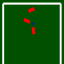

|  |
Physics Sample: Hinge Joint
By Christian Thompson
|
Sample which shows a hinge joint reacting to collisions.
Note: this description is different from the one which appears after following the tutorial documentation. This is because the tutorial documentation overrides the getInfo method to provide a description. If this method is not overridden, MASON instead tries to display a file called index.html stored in the same directory as the simulation (which is what's going on here).